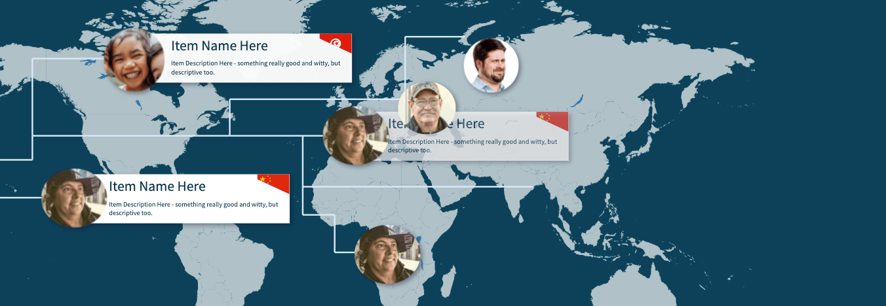
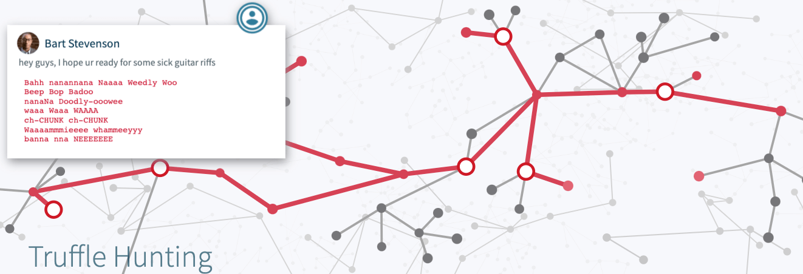

Client work / Presentation infrastructure
Animated Presentation
A configurable presentation for a wall of 30 screens, synchronized across two computers.

Project overview
A client needed a dynamic animated presentation for a big wall of screens they had near their sales room. With the help of a fantastic designer, I created a web-based experience and traveled to their headquarters to help install it.
The presentation needed to be configurable to change slightly based on what sort of client the company was selling to. Aside from that, there were also quite a few interesting engineering nuts to crack!
Note: all the textual content of the project has been changed to goofy random text to protect the anonymity of the client.
Tools React, Typescript, WebSockets, GreenSock Animation Platform
UI Animation

- I built a custom sequencing/animation framework that used React and the GreenSock Animation Platform (GSAP). It made it easier to orchestrate long sequences of animations, and schedule UI changes.
- I learned a lot about tweening, animation curves and timing functions, and ways to make animations more performant in the browser. It presented so many cool challenges: procedurally generating complex animations, finding exactly the right fade curve, structuring the data for the animation timelines, etc. etc. etc.
- As a bonus, I found an excuse to dig out an old Linear Algebra textbook, and used math to make the 3D graphs appear to rotate around in the background. Instead of taking the performance hit of using actually rendering them in 3D with some WebGL library, they are actually rendered as SVGs in 2D but look as if they're rotating in 3D! I remember a coworker remarking that it was "magic", which was a proud moment for me!
Ingenuity

- At the beginning of this project, the team was unsure of how to accomplish it, because they had made static, packaged presentations for people, and they had done web apps, but nothing that was kind of a combination of the two.
- I spent a few days doing some proof-of-concepts. I tried doing interesting animations in the context of React, and played with what was possible with web animation. I did a test of an animated graph diagram with the nodes wobbling around. Once I could see what was possible with the tools at hand, I was able to come back and confidently say that it could be done.
- I also made a separate configuration page that allowed the clients to change the project in different ways, showing different images and different parts of the presentation depending on what would be most germane at the moment.
Problem Solving Under Pressure

- When we arrived at the client's HQ, we got thrown a curveball: the giant wall of screens was actually controlled by two separate computers, one for the left half and one for the right half. They wanted the presentation to continue across the entire wall, but up until that point, I had developed with the assumption that there was one, central computer that the presentation would run on!
- I panicked for a bit, but finally discovered a way this could be accomplished - I added URL parameters that could be used to offset the presentation to the left or right - that way the computer on the right could only present the right half of the presentation.
- The two halves also had to stay perfectly synced together, so I implemented some WebSocket communication that could run between two instances of the site, and continually adjust to each other until they were at the exact same moment in the presentation.
- A problem related to that was that some of the animated graph nodes were supposed to wobble around randomly - but with the presentation split into two computers, the random wobbles would be generated differently on each instance and the illusion would be broken. To remedy this, I re-implemented all randomness logic to use a psuedo-random number generator. This allowed you to seed each instance to generate the exact same "random" numbers, no matter how many numbers you needed.